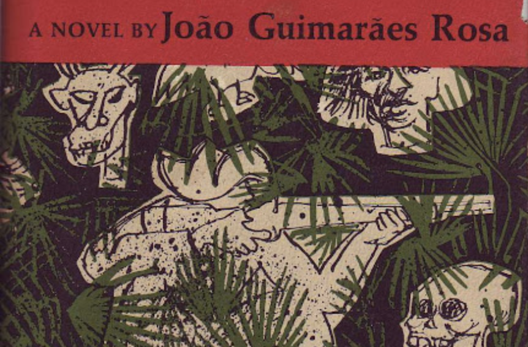

Maybe it’s just me. Though, saying this after a title that pretends to “know all, say all” seems a kind of literary escapism—brackets of reluctance. This is what I have to say, and I will tell you. Though to say it right requires a journalistic recap of my day: a kind of middle school diary entry. Bear with me (please).
Maybe it’s just me but João Rosa’s short story The Third Bank of the River is an allegory for consciousness, anxiety, and control.
So, let’s get on with it:
Nov 7th. 2018.
My life seems in limbo. Looming adulthood hangs by the thread of a physics course that I am trundling through. I never thought electricity and magnetism would prove a critical delineator of my life, but here we are. B.E.M, A.E.M. I’m living at home: barely writing, reading, physicsing, and waiting.
All this to say that I spent today lounging on the coach in my parent’s house. I have had three coffee’s too many: my body not deserving to by primordialized by adrenaline, having no reason to be whipped into action, having no lions, made brain lions.
I had just finished reading Phillip Roth’s American Pastoral. A masterpiece, which, like all great pieces of literature, left me feeling like shit about my own writing. It possessed a deep compassion for its characters—at least that’s how the blurb (correctly) described its literary achievement. Though, compassion for its characters seemed to be simply a way to realize and distribute the profound sadness of their experiences.
So, the book left me anxious and sad, and my brain was swimming with words and coffee. I couldn’t focus on anything.
It’s in these kinds of moments that I tend to feel dissociated—detached from the world and my decisions. One of my recurring fears is losing control of my body my mind. Although this losing control is not the terrifying part: the terrifying part is coming to after 10 or 20 or 30 or 40 years to whatever life an automated version of myself has built. If I can zone out for 20 second, why can’t I zone out for 20 years. If the past seems lived by someone else, then who is to say it isn’t. This is not to say that I fear aging (or at least it predominantly isn’t) or am tumbling into a midlife crisis (read: DFW’s thoughts on early midlife crises). It is more a question of anxiety, consciousness, and control: each of which is really just about the other two.
It was in all of this nervousness and coffee that I finally understood João Rosa’s short story The Third Bank of the River. Though, I think understanding stories is a semantic misapplication. We don’t understand stories: we come to an understanding with them.
So, today I came to an understanding with João Rosa’s story. If you haven’t read it, then I strongly recommend you do so. In the rest of this post I will discuss nuances and specifics of the story,
In the story the protagonist’s father commissions a boat and takes it out onto the wide river that snakes past his home; once on the river, he never returns to the shore.
Father headed his boat to the other side of the river and into the marshes, which he knew like the palm of his hand but in which other people quickly got lost. There in his private maze, which extended for miles, with heavy foliage overhead and rushes on all sides, he was safe
Though, after all my wordage, I’m not here to try and convince you that this story is about consciousness or anxiety; I don’t think it was meant to be about either.
What I can’t help but thinking and feeling when reading and rereading the story is this:
When the son tries to take his father’s place on the river.
He heard me. He stood up. He maneuvered with oars and headed the boat toward me. He had accepted my offer. And suddenly I trembled, down deep. For he had raised his arm and waved—the first time in so many, so many years
When the father rows back towards the shore, I cannot help but think he is waking up from a dream: from his life that has been lived and spent on the river without him. A life finally remembered.
On a boat in a river seems a way to live life without living it: to experience it free of anxiety and free of the inevitable edges of profound sadness.
Though this trading places—the son taking his father’s place on the river—seems trivial because the son has spent his life in the river without knowing it. His own life has passed by in the shadow of the river. His own life has been dreamed. His own life is weaved in the fabric of the water.
The story reads so much like a dream, too. Passing quickly, suddenly: a generation spent in a couple of pages. All this to say:
Anxiety is swimming against the current of the stream of consciousness, but what would life be if we stopped.
I must stay in the deserts and unmarked plains of my life, and I fear I shall shorten it. But when death comes I want them to take me and put me in a little boat in this perpetual water between the long shores: and I, down the river, lost in the river, inside the river…the river…